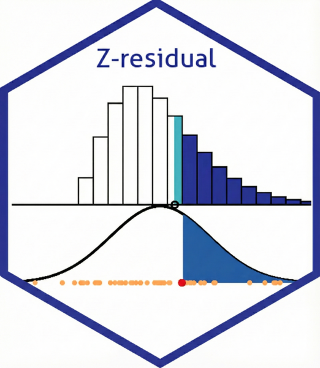

A Shinylive App for Illustrating Z-residuals
Source:vignettes/articles/illus_zresid.qmd
#| '!! shinylive warning !!': |
#| shinylive does not work in self-contained HTML documents.
#| Please set `embed-resources: false` in your metadata.
#| standalone: true
#| viewerHeight: 840
#| components: [viewer]
library(shiny)
col_S <- "#68dbed"; col_U <- "#41b6c4"; col_Z <- "#225ea8"
col_curr <- "#d7191c"; col_past <- "#fdae61"; col_grid <- "grey92"
sel <- function(id, label, choices, selected, width = "100px")
selectInput(id, label, choices, selected, selectize = FALSE, width = width)
## mean: pick 2..20 from the list, or type any positive number and press Enter
mu_sel <- function(id, selected)
selectizeInput(id, NULL, mu_choices, selected, width = "80px",
options = list(create = TRUE, persist = TRUE,
createFilter = "^(?!0*\\.?0*$)\\d*\\.?\\d+$"))
mu_choices <- 2:20
size_choices <- c(0.5, 1, 2, 5, 10, 20, 50, 100)
ui <- fluidPage(
if (exists("useBusyIndicators")) useBusyIndicators(spinners = FALSE, pulse = FALSE),
tags$head(tags$style(HTML("
.recalculating { opacity:1 !important; transition:none !important; }
.recalculating::after { display:none !important; }
.ctrl { background:#f5f7fa; border:1px solid #d5dbe3; border-radius:6px;
padding:6px 12px 2px 12px; margin-bottom:6px; }
.ctrl .form-group { display:flex; align-items:center; gap:6px; margin:0 0 4px 0; width:auto !important; }
.ctrl label.control-label { margin:0; font-weight:normal; white-space:nowrap; min-width:92px; }
.ctrl select, .ctrl input[type=number] { height:26px; padding:1px 4px; font-size:13px; }
.ctrl .checkbox { margin:0 0 4px 0; }
.ctrl h5 { margin:0 0 4px 0; font-weight:bold; font-size:13px; color:#555; }
.ctrl .btn { width:40px; height:34px; margin:0 4px 4px 0; padding:0; font-size:16px; line-height:1; }
.ctrl .btn.btn-reset { width:auto; padding:0 10px; font-size:14px; }
.ctrl .irs { width:100%; }
.ctrl .play-row { display:flex; align-items:center; gap:12px; border-top:1px solid #e1e6ec; padding-top:6px; }
.ctrl .play-btns { white-space:nowrap; }
.ctrl .i-slider { flex:1; min-width:120px; }
.ctrl .i-slider .form-group { display:block; }
.ctrl .i-slider label.control-label { display:none; }
.ctrl select:disabled { background:#e9ecef; color:#888; cursor:not-allowed; }
.ctrl table.ptab { border-collapse:collapse; margin-bottom:2px; }
.ctrl table.ptab th { font-weight:normal; color:#555; font-size:12px; padding:0 6px 2px 0; }
.ctrl table.ptab td { padding:0 6px 0 0; vertical-align:middle; }
.ctrl table.ptab td.rlab { min-width:52px; }
.ctrl table.ptab .form-group { margin:0 0 4px 0; }
.ctrl .selectize-control { margin:0; width:80px; }
.ctrl .selectize-input { min-height:26px; padding:2px 20px 2px 6px; font-size:13px; line-height:20px; }
.ctrl .selectize-input > input { font-size:13px; }
.ctrl .selectize-dropdown { font-size:13px; }
.ctrl .selectize-control.disabled .selectize-input { background:#e9ecef; color:#888; opacity:1; }
"))),
tags$script(HTML("
// 'Use true model' locks the fitted parameters to the true ones
$(document).on('change', '#same', function() {
$('#size_fit').prop('disabled', this.checked);
var s = $('#mu_fit')[0].selectize;
if (s) { if (this.checked) s.disable(); else s.enable(); }
});
// highlight Reset while the panel holds settings not yet applied
$(function() {
Shiny.addCustomMessageHandler('pending', function(on) {
$('#reset').toggleClass('btn-warning', on).toggleClass('btn-default', !on);
});
});
")),
div(class = "ctrl",
fluidRow(
column(7, h5("NB Models"),
tags$table(class = "ptab",
tags$tr(tags$th(""), tags$th(HTML("Mean μ")), tags$th("Dispersion (size)")),
tags$tr(tags$td(class = "rlab", "True"),
tags$td(mu_sel("mu_true", 2)),
tags$td(sel("size_true", NULL, size_choices, 5, "80px"))),
tags$tr(tags$td(class = "rlab", "Fitted"),
tags$td(mu_sel("mu_fit", 5)),
tags$td(sel("size_fit", NULL, size_choices, 5, "80px")))),
checkboxInput("same", "Use the true model as the fitted model", FALSE)),
column(5, h5("Animation"),
sel("n_sim", "Observations", c(10, 20, 50, 100, 200), 50),
sel("speed", "Speed", c("Slow" = 2, "Normal" = 1.2, "Fast" = 0.6,
"Very fast" = 0.2, "Fastest" = 0.05), 1.2),
numericInput("seed", "Seed", 2026, width = "100px"))
),
div(class = "play-row",
div(class = "play-btns",
actionButton("play", "\u25B6", class = "btn-primary", title = "Play"),
actionButton("pause", "\u23F8", title = "Pause"),
actionButton("stop", "\u23F9", title = "Stop and go back to the first observation"),
actionButton("nxt", "\u203A", title = "Next observation"),
actionButton("end", "\u00BB", title = "Jump to the last observation"),
actionButton("reset", "\u21BB Reset", class = "btn-reset",
title = "Stop, apply the new settings and start over")),
div(class = "i-slider", sliderInput("i", "i", 1, 50, 1, step = 1, width = "100%")))
),
plotOutput("plot", height = "600px")
)
server <- function(input, output, session) {
## Settings in the panel; they take effect only when Reset is pressed
staged <- reactive({
same <- isTRUE(input$same)
list(mu_true = as.numeric(input$mu_true),
size_true = as.numeric(input$size_true),
mu_fit = as.numeric(if (same) input$mu_true else input$mu_fit),
size_fit = as.numeric(if (same) input$size_true else input$size_fit),
n = as.numeric(input$n_sim),
seed = if (isTRUE(is.finite(input$seed))) input$seed else 2026)
})
applied <- reactiveVal(list(mu_true = 2, size_true = 5, mu_fit = 5, size_fit = 5,
n = 50, seed = 2026))
observe(session$sendCustomMessage("pending",
!isTRUE(all.equal(unlist(staged()), unlist(applied())))))
observe({
if (isTRUE(input$same)) {
## the true mean may be a typed-in value, so add it to the fitted list
mu <- input$mu_true
updateSelectizeInput(session, "mu_fit", selected = mu,
choices = sort(unique(c(mu_choices, as.numeric(mu)))))
updateSelectInput(session, "size_fit", selected = input$size_true)
}
})
n_sim <- reactive(applied()$n)
speed <- reactive(as.numeric(input$speed))
running <- reactiveVal(FALSE)
cur <- reactiveVal(1)
## Values pushed to the slider by the server come back as input$i a moment
## later. Those echoes must be ignored, or a stale one (e.g. from a play
## step) overrides a later jump such as "End".
sent <- integer(0)
set_i <- function(v) {
v <- max(1, min(v, n_sim()))
cur(v)
if (!identical(isolate(input$i), v)) {
sent <<- c(sent, v)
updateSliderInput(session, "i", value = v)
}
}
observeEvent(input$i, {
k <- match(input$i, sent)
if (!is.na(k)) sent <<- sent[-seq_len(k)] # echo of a server update
else { running(FALSE); cur(input$i) } # user dragged the slider
})
observeEvent(input$play, {
if (cur() >= n_sim()) set_i(1)
running(TRUE)
})
observeEvent(input$pause, running(FALSE))
observeEvent(input$nxt, { running(FALSE); set_i(cur() + 1) })
observeEvent(input$end, { running(FALSE); set_i(n_sim()) })
observeEvent(input$stop, { running(FALSE); set_i(1) })
observeEvent(input$reset, {
running(FALSE)
a <- staged()
if (!all(is.finite(unlist(a))) || a$mu_true <= 0 || a$mu_fit <= 0) {
showNotification("Please choose a positive mean for both models.", type = "warning")
return()
}
applied(a)
updateSliderInput(session, "i", max = n_sim())
set_i(1)
})
observe({
if (running()) {
invalidateLater(speed() * 1000, session)
isolate({
if (cur() >= n_sim()) running(FALSE) else set_i(cur() + 1)
})
}
})
## Everything that is fixed for a given set of settings: the sample, the
## residuals and the plotting grids. Each frame then only adds points.
model <- reactive({
a <- applied()
set.seed(a$seed)
y <- rnbinom(a$n, mu = a$mu_true, size = a$size_true)
u <- runif(a$n)
S <- pnbinom(y, mu = a$mu_fit, size = a$size_fit, lower.tail = FALSE)
p <- dnbinom(y, mu = a$mu_fit, size = a$size_fit)
rsp <- S + u * p
d <- data.frame(id = seq_len(a$n), y = y, u = u, p_y = p, rsp = rsp,
z = qnorm(rsp, lower.tail = FALSE))
## centre the x-axis on the fitted mean so it lines up with z = 0 below;
## the half-width is fixed over all observations so the axis does not jump
xc <- a$mu_fit
half <- max(xc + 0.5, max(y) + 1 - xc,
qnbinom(0.995, mu = a$mu_true, size = a$size_true) - xc,
qnbinom(0.995, mu = a$mu_fit, size = a$size_fit) - xc)
xlim <- c(xc - half, xc + half)
## PMF step lines over the whole x-range, including the zero parts,
## so both curves drop to the x-axis at y = -0.5 and in the right tail
x_step <- floor(xlim[1]):(ceiling(xlim[2]) + 1)
p_true <- dnbinom(x_step, mu = a$mu_true, size = a$size_true)
p_fit <- dnbinom(x_step, mu = a$mu_fit, size = a$size_fit)
## height under the two PMFs at each y_i, used to stack the dots
env <- pmax(dnbinom(y, mu = a$mu_true, size = a$size_true), p)
xn <- seq(-6, 6, length.out = 400)
list(a = a, d = d, env = env, xlim = xlim,
ylim = c(0, max(p_true, p_fit) * 1.1),
x_step = x_step, xs = pmin(pmax(x_step - 0.5, xlim[1]), xlim[2]),
p_true = p_true, p_fit = p_fit,
xticks = Filter(function(t) t >= 0 && t == round(t), pretty(xlim, n = 10)),
xn = xn, dn = dnorm(xn))
})
frame_cache <- cachem::cache_mem(max_size = 100 * 1024^2)
## Base graphics: much faster than ggplot under webR. Frames are cached, so
## a replay (or stepping back) with the same settings is instant.
output$plot <- bindCache(renderPlot({
m <- model(); d <- m$d; a <- m$a
i <- min(cur(), nrow(d))
y <- d$y[i]; z <- d$z[i]
layout(matrix(1:2, ncol = 1), heights = c(1.2, 1))
par(cex = 1, mar = c(3.6, 4.5, 2.4, 1.5), mgp = c(2.3, 0.6, 0), las = 1, tcl = -0.3)
## ---- A. NB plot
plot.new(); plot.window(m$xlim, m$ylim, xaxs = "i", yaxs = "i")
abline(v = m$xticks, h = axTicks(2), col = col_grid)
xx <- (y + 1):(ceiling(m$xlim[2]) + 1) # S_i(y_i): mass above y_i
rect(xx - 0.5, 0, xx + 0.5, dnbinom(xx, mu = a$mu_fit, size = a$size_fit),
col = col_S, border = NA)
rect(y + 0.5 - d$u[i], 0, y + 0.5, d$p_y[i], col = col_U, border = NA)
lines(m$xs, m$p_true, type = "s", lwd = 2)
lines(m$xs, m$p_fit, type = "s", lwd = 3, lty = 2)
## stack y_1..y_i as dots; a column that would rise above the PMF curves
## at that value shrinks its dots so the stack stays under the curves
yy <- d$y[1:i]; ids <- seq_len(i)
cnt <- ave(ids, yy, FUN = length); k <- ave(ids, yy, FUN = seq_along)
cex0 <- 0.8 # full-size dot
d0 <- diff(grconvertY(c(0, 0.75 * cex0 * par("cex") * par("ps") / 72), "inches", "user"))
step <- pmin(d0, m$env[1:i] / cnt)
ypos <- step * (k - 0.5)
points(yy, ypos, pch = 16, cex = cex0 * step / d0)
points(y, ypos[i], pch = 1, cex = 1.6, lwd = 2, col = col_curr, xpd = NA)
axis(1, at = m$xticks, lwd = 0, lwd.ticks = 1)
axis(2, lwd = 0, lwd.ticks = 1)
title(xlab = expression(y[i]), ylab = "Probability")
title(main = bquote(paste(y[i] == .(y), ", RSP = ", .(round(d$rsp[i], 3)))),
adj = 0, font.main = 1, cex.main = 1.1)
legend("topright", bty = "n", cex = 0.9, y.intersp = 1.5, xpd = NA,
legend = c(expression(S[i](y[i]), U[i] %*% p[i](y[i])),
as.expression(bquote("True: " ~ mu == .(a$mu_true) * "," ~ size == .(a$size_true))),
as.expression(bquote("Fitted:" ~ mu == .(a$mu_fit) * "," ~ size == .(a$size_fit)))),
pch = c(15, 15, NA, NA), pt.cex = 2.2, col = c(col_S, col_U, 1, 1),
lty = c(NA, NA, 1, 2), lwd = c(NA, NA, 2, 3), seg.len = 2.5)
## ---- B. Z plot
plot.new(); plot.window(c(-3, 3), c(0, 0.45), xaxs = "i", yaxs = "i")
abline(v = -3:3, h = axTicks(2), col = col_grid)
up <- m$xn >= z
if (any(up)) polygon(c(max(z, -6), m$xn[up], 6), c(0, m$dn[up], 0), col = col_Z, border = NA)
lines(m$xn, m$dn, lwd = 1.5)
if (i > 1) points(d$z[1:(i - 1)], rep(0, i - 1), pch = 16, col = col_past, cex = 1, xpd = NA)
points(z, 0, pch = 16, col = col_curr, cex = 1.6, xpd = NA)
axis(1, at = -3:3, lwd = 0, lwd.ticks = 1)
axis(2, lwd = 0, lwd.ticks = 1)
title(xlab = expression(z[i]), ylab = "Density")
title(main = bquote(paste("Standard normal: ", z[i] == .(round(z, 2)))),
adj = 0, font.main = 1, cex.main = 1.1)
}, res = 96), applied(), cur(), cache = frame_cache)
}
shinyApp(ui, server)What does this App Show
A Z-residual turns each observation y_i into a number z_i on the standard normal scale, using the model’s predictive distribution for y_i. If the model is correct, the z_i behave like a sample from N(0,1); if it is wrong, they drift away from it. The app shows this transformation one observation at a time for count data drawn from a negative binomial (NB) distribution:
- Top panel: each y_i is drawn from the true model (solid line) and stacked as a black dot. The fitted model (dashed line) is the model being checked. The blue area under the fitted PMF to the right of y_i is the RSP, the randomized upper-tail probability of y_i (see Equation 1 below).
- Bottom panel: the same upper-tail area is marked under the standard normal density. The point where that area begins is the Z-residual z_i (see Equation 2 below), and the Z-residuals accumulate as orange dots.
Use the control panel to set the mean (\mu; pick an integer from 2 to 20, or type any positive number and press Enter) and dispersion (NB size) of the true and the fitted models, the number of observations, the animation speed and the random seed. Tick Use the true model as the fitted model to make the fitted model equal to the true one. New settings take effect when you press Reset, which is highlighted while there are changes not yet applied; Reset stops the animation, draws a new sample and goes back to the first observation. Then use the play controls (Play, Pause, Stop, Next and End, or drag the slider) to step through the observations.
- Correct specification: make the fitted model equal to the true model (e.g. both \mu=5, size =5). The stacked observations (black dots) follow the fitted PMF, and the accumulating Z-residuals (orange dots) follow the standard normal density.
- Misspecified mean: set the means apart (e.g. true \mu=2, fitted \mu=5). The observed y_i tend to be smaller than expected, the RSP values are too large, and the Z-residuals drift to the left, signalling that the model overestimates the mean.
- Misspecified dispersion: keep the means equal but give the true model more dispersion (e.g. true size =1, fitted size =20). The observations are more spread out than the fitted model allows, and the Z-residuals pile up in both tails.
In the top panel, the blue area under the fitted distribution is the RSP (upper-tail area): the survival probability S_i(y_i) (light blue) plus a random fraction U_i of the probability mass p_i(y_i) (darker blue).
Z-residuals
The Zresidual package implements diagnostic residuals based on the predictive distribution of each observation. By utilizing the full probabilistic information of the model, the package generates residuals that are approximately normally distributed. This allows for standard diagnostic techniques similar to using Pearson residuals in OLS regression.
RSP
For a given observation y_i, the Randomized Survival Probability (RSP)—also known as the randomized probability integral transform—represents the value of the predictive survival function (upper-tail probability) at y_i, adjusted with a randomization term to ensure continuity for discrete outcomes. It is defined as:
RSP_i(y_i \mid \theta) = S_i(y_i \mid \theta) + U_i \, p_i(y_i \mid \theta) \tag{1}
where S_i and p_i represent the survival function and probability mass function, respectively, derived from the predictive distribution of y_i given covariates \mathbf{x}_i and parameters \theta. U_i \sim \text{Unif}(0,1) is a random uniform variable used to smooth discrete outcomes. Under a correctly specified model—where the observed data y_i arises from the assumed predictive distribution—the RSP follows a \text{Unif}(0,1) distribution.
Z-residual
The Z-residual (aka randomized quantile residual) is derived by transforming the RSP via the inverse survival function of N(0,1):
z_i(y_i \mid \theta) = -\Phi^{-1}\left(RSP_i(y_i \mid \theta)\right)= \Psi^{-1}\left(RSP_i(y_i \mid \theta)\right) \tag{2}
where \Psi^{-1}(p) = -\Phi^{-1}(p) = \Phi^{-1}(1-p) represents the inverse survival function (upper-tailed quantile) of the standard normal distribution N(0,1).
In words, the Z-residual is simply the N(0,1) value that shares the same upper-tail area (RSP) as the observed y_i. This transformation effectively maps any predictive distribution to the standard normal scale while preserving the tail probabilities. If the model is correct, the resulting Z-residuals follow a standard normal distribution.
Intuition: Think of the Z-residual as the distance to the median, but rescaled to account for skewness and smoothed to handle discreteness. This ensures that a residual of +2 always implies the same degree of ‘extremeness’, regardless of the original distribution’s shape.